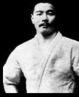

01

O Pioneiro
Mitsuyo Maeda
"Conde Koma"
"Conde Koma"
Japão → Brasil
A história do Jiu Jitsu começa com Mitsuyo Maeda, o Conde Koma. Nascido no Japão, foi um dos principais discípulos de Jigoro Kano. Migrou para o Brasil no início do século XX, aportando em Belém do Pará, onde conheceu o patriarca da família, Gastão Gracie. Como forma de agradecimento pela ajuda em se estabelecer no país, comprometeu-se a ensinar o Jiu Jitsu ao seu filho mais velho, Carlos Gracie. Nasce aí o Jiu Jitsu Brasileiro.